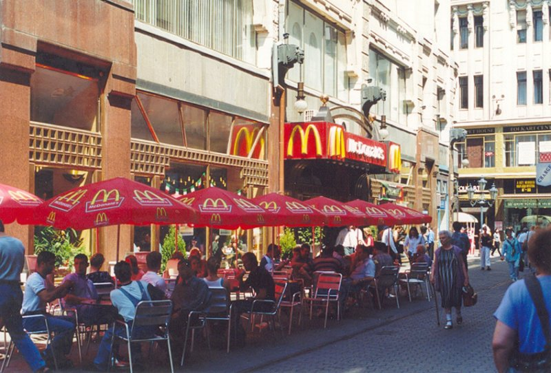
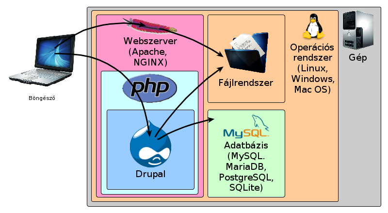

Alapismeretek
Tartalomkezelő rendszerek felépítése (TKR=CMS)
Definició a CMS-re (Wikipédia)
Webalkalmazás fejlesztési keretrendszer (WAF)
Más rendszerek CMS-ek
- Wordpress
- Joomla
- Typo3
Általános működés
Ügyfél (client) és kiszolgáló (server)
Ügyfél (client) és kiszolgáló (server)

Webszerver működése
Érvek a Drupal használatára
Nyilt forráskódú
Szabadon felhasználható
Könnyű kezelhetőség
Elterjedt
(Drupal Core Usage)
Jól dokumentált
További előnyök
- sok kiegészítő modul,
- rugalmasan bővíthető tartalmak,
- könnyen kezelhető űrlapok (webform),
- listák és tartalmak könnyű megjelenítése (views)
- komplex funkcionalitás
Mikor ne használjuk?
Csak, ha egy cél van.
Közösség
Come for the software, stay for the community."
Gyere egy szoftver miatt, maradj a közösségért."
Magyar közösség weboldala
Nemzetközi közösség weboldala
Események
Drupical
Január 25-26: Drupal Global Sprint Weekend
Március 24-30: Drupal Developer Days
Szeged
Május 17-18: Drupal Camp
Alpe-Adria
Augusztus vége: Drupalaton
Szeptember 29-től, október 3-ig:
DrupalCon Amsterdam
Szeptember 29-től, október 3-ig:
DrupalCon Amsterdam
Volt: DrupalCon Prague
November: Drupal Hétvége 2014.
Tavalyi: http://drupal.hu/konferencia/2013